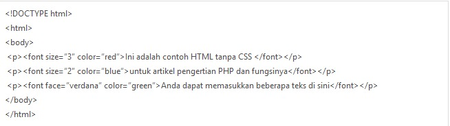
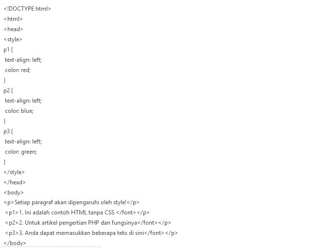

Bahasa pemrograman PHP biasanya tidak digunakan pada keseluruhan pengembangan website, melainkan dikombinasikan dengan beberapa bahasa pemrograman lain. Misalnya saja untuk mengatur tampilan, layout, dan berbagai macam menu menggunakan CSS.
Selain itu, terdapat juga beberapa framework PHP; Laravel, Phalcon, Codigniter, Symfoni yang saat ini banyak tersedia di internet untuk memudahkan proses pengembangan website menggunakan bahasa pemrograman tersebut.
Agar Anda lebih mengenai bahasa pemrograman PHP dan CSS, kita akan membahas terlebih dahulu apa itu PHP dan apa fungsi PHP di dalam proses pengembangan website. Selain itu, pembahasan mengenai CSS dan fungsinya juga akan kami ulas di artikel ini.
PHP adalah bahasa pemrograman yang sering disisipkan ke dalam HTML. PHP sendiri berasal dari kata Hypertext Preprocessor. Sejarah PHP pada awalnya merupakan kependekan dari Personal Home Page (Situs personal). PHP pertama kali dibuat oleh Rasmus Lerdorf pada tahun 1995. Pada waktu itu PHP masih bernama Form Interpreted (FI), yang wujudnya berupa sekumpulan skrip yang digunakan untuk mengolah data formulir dari web.
Bahasa pemrograman ini menggunakan sistem server-side. Server-side programming adalah jenis bahasa pemrograman yang nantinya script/program tersebut akan dijalankan/diproses oleh server. Kelebihannya adalah mudah digunakan, sederhana, dan mudah untuk dimengerti dan dipelajari.
Semenjak PHP menjadi bahasa pemrograman yang open source, pengembang tidak perlu menunggu sampai dengan update terbaru rilis. Pengguna PHP akan lebih baik jika menggunakan versi terbaru. Sehingga jika ada rilis terbaru Anda harus menyesuaikan sistem Anda dengan versi PHP yang paling baru. Meskipun harus menggunakan versi terbaru, biaya untuk maintenance dan web development sangat terjangkau.
Bahasa pemrograman PHP membantu Anda untuk mengembangkan aplikasi berbasis web yang cukup kompleks, handal, dan cepat. Tergantung dari spesifikasi bisnis, penggunaan hosting, tingkat pengalaman, kebutuhan aplikasi, dan pengembangan timeframe. Selain itu ada banyak PHP frameworks yang dapat Anda pilih.
CSS berasal dari kata Cascading Style Sheet. CSS adalah bahasa pemrograman yang digunakan untuk mengatur style di dalam website atau bisa disebut dengan kumpulan kode-kode yang bertujuan untuk mengatur tampilan/layout halaman web supaya terlihat lebih menarik oleh pengunjung.
Web programmer dan blogger menggunakan CSS untuk menentukan tata letak, warna, background, jenis font, ukuran, dan hampir semua hal yang berhubungan dengan tampilan website. Ini yang membuat CSS hampir ada di dalam banyak website di internet.
CSS biasanya diletakkan pada file terpisah. Sehingga jika ada fungsi atau skrip yang ingin menggunakan CSS tinggal memanggilnya saja. Langkah ini akan menyederhanakan skrip HTML yang cukup panjang jika ingin merubah warna, font, dan lain sebagainya.
Di bawah ini adalah contoh pemberian warna menggunakan HTML saja.
Sedangkan jika menggunakan CSS dapat disingkat menjadi kode seperti di bawah ini.
Anda dapat memisahkan seluruh kode yang ada di dalam baris "" ke dalam file yang terpisah.
Demikian pengertian, sejarah dan fungsi PHP yang bisa diketahui. Semoga artikel mengenai pengertian PHP diatas bisa menambah wawasan Anda dan bermanfaat.